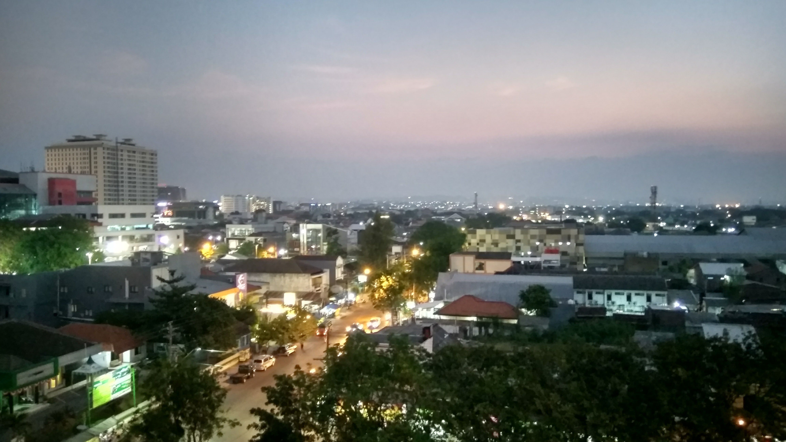

N O V R A N D E S
Saya seorang profesional dengan keahlian pemahaman dan penyampaian materi yang baik. Saya pekerja keras, rajin, dan berdedikasi pada setiap tanggung jawab yang diberikan. Memberikan kualitas terbaik pada setiap pekerjaan yang saya lakukan. Serta, menjunjung tinggi nilai kejujuran.
R I W A Y A T
S T U D I
SMA NEGERI 1 RAMBANG DANGKU
Menyelesaikan pendidikan tingkat sekolah Menengah Atas di SMA Negeri 1 Rambang Dangku. Merupakan sebuah SMA yang ada di kecamatan Rambang Dangku, Kabupaten Muara Enim, Provinsi Sumatera selatan.

Uiversitas AKI Semarang
Menyelesaikan Pendidikan tingkat strata satu (S1) di sebuah perguruan tinggi di kota semarang, dan terletak di tengah-tengah atau dijantung kota semarang yaitu Universitas AKI Semarang. Berhasil Lulus dari perguruan tinggi selama empat (4) tahun atau delapan (8) semester dengan predikat cumlaude.